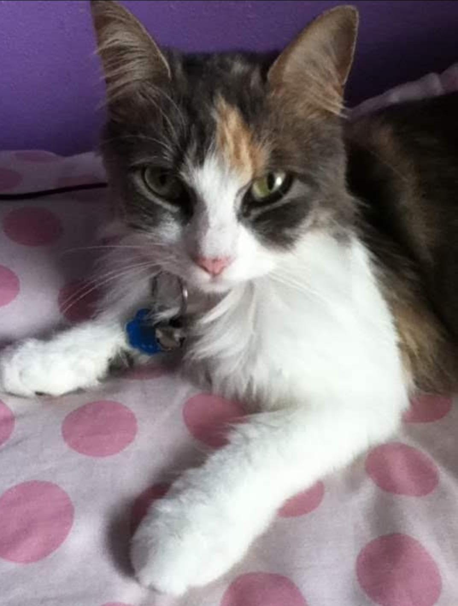
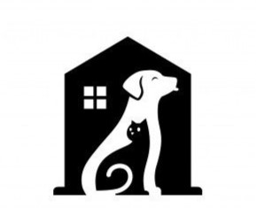
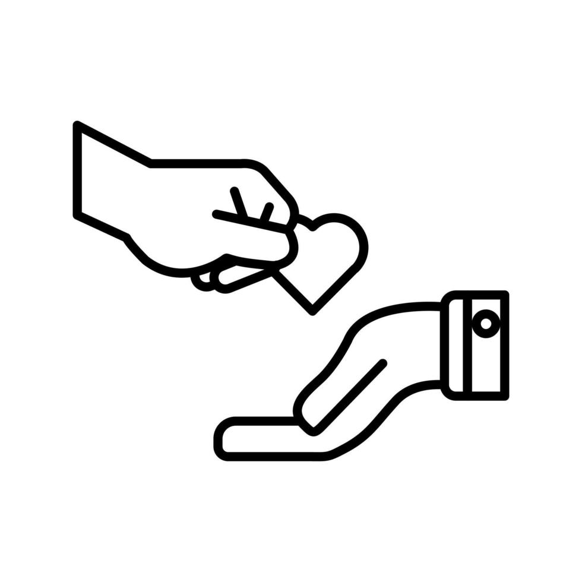
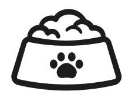

Acerca de Nosotros
Esta iniciativa comenzó cuando encontré a mi primera mascota, Venus. Nunca había experimentado esta sensación de amor incondicional; inmediatamente se convirtió en mi soporte emocional en mis malos momentos. Solo al mirarla, pensaba cómo pueden hacerle tanto daño a mascotas que solo te brindan amor, compañía y gratitud. Entonces, emprendí este viaje con el fin de encontrarles hogar a animalitos que no tuvieron la misma suerte que Venus. También comencé con la iniciativa de esterilizar a animales que crecieron en un entorno "salvaje" y devolverlos a su hábitat, para evitar la sobrepoblación de animales en la calle.
CONOCE A LAS MASCOTAS QUE YA TIENEN UN HOGAR
Suka
Ella estuvo en el albergue 2 meses luego de su nancimiento, hasta que llego su nueva familia y la adoptó.
Sabrina
Ella fue encontrada en una calla de Bayamón, hoy día lleva 4 años con su dueña que la ama.
Layla
Fue rescatada de un hogar que no la podía tener más, hoy dia lleva 3 años con su nueva familia con 2 niños que la aman.
Kira
Esta perrita fue abandonada y luego de rescatarla le encontramos un hogar donde no le falta el amor.
Luna
Ella fue econtrada con sus hermanitos, todos fueron adoptados en hogares que les brindan mucho amor.

Shanty
Ella fue entregada por su dueño, a la semana ya tenia un hogar nuevo.
Mutante
Este gatito lo dejaron en nuestras facilidades y ya tinene su hogar.
Raya
Rescatada de una carretera principal, hoy tiene 5 años con sus dueños.
| COLABORA CON NOSOTROS | Somos una organización sin fines de lucro dedicada al bienestar de los animales de Puerto Rico. Tenemos las facilidades para albergar animales para adopción, animales perdidos y aceptamos animales no deseados. Además, contamos con las facilidades de una clínica básica de salud a bajo costo, donde brindamos los servicios de seguimiento, vacunación, esterilizacion. Dependemos mayormente del apoyo que nos brinda la comunidad a través de donativos, voluntariado y otras formas de apoyo. | ||
|---|---|---|---|
   
Hogar Temporero Donaciones Materiales y Productos Voluntariado |
|||
Mascotas para adopción
Pelusa
Es hembra, tiene 2 años aproximadamente, está esterilizada y tiene las vacunas al día.
Pepa
Es hembra, tiene aproximadamente 1 año y medio, está esterilizada y tiene las vacunas al día.
Blue
Es macho, tiene aproximadamente 3 años y tiene las vacunas al día.
Salem
Es macho y tiene las vacunas al día.
Simba
Es macho, tiene aproximadamente 2 años, esta esterilizado y tiene las vacunas al día.
Blacky
Tiene aproximadamente 3 años, es muy sociable y tiene las vacunas al día.

Don Gato
El es Don Gato, tiene 5 años y tiene todas las vacunas al día.
Bosnia
Tiene aproximadamente 4 años, está esterilizada y tiene las vacunas al día.
Tulús
Es macho, tiene aproximadamente 1 año y tiene las vacunas al día.
Brandon
El tiene 3 años aproximadamente, amistoso, amoroso y tiene las vacunas al día.
Manchas
Es macho y tiene las vacunas al día.
Berlios
Tiene 1 año aproximadamente y tiene todad las vacunas al día.